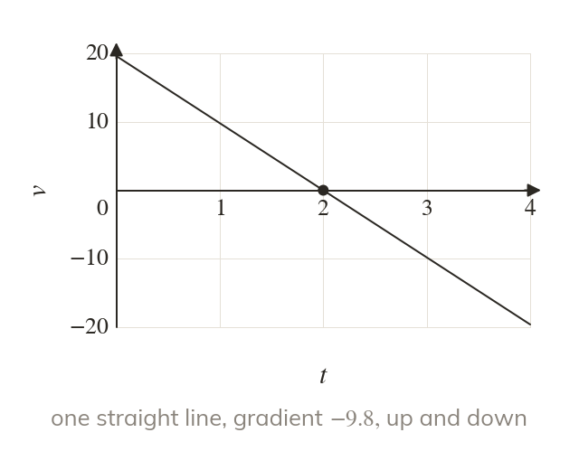
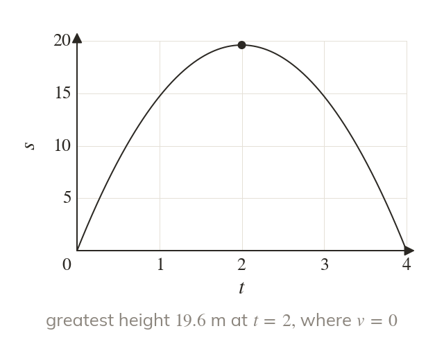
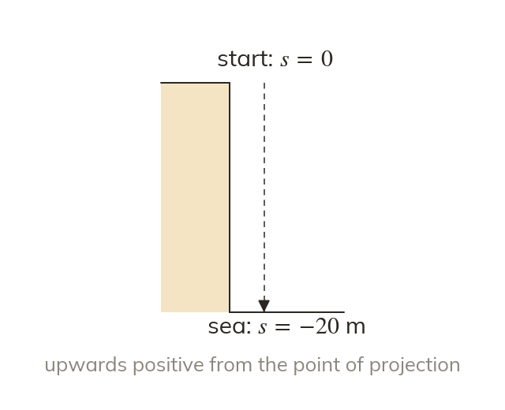
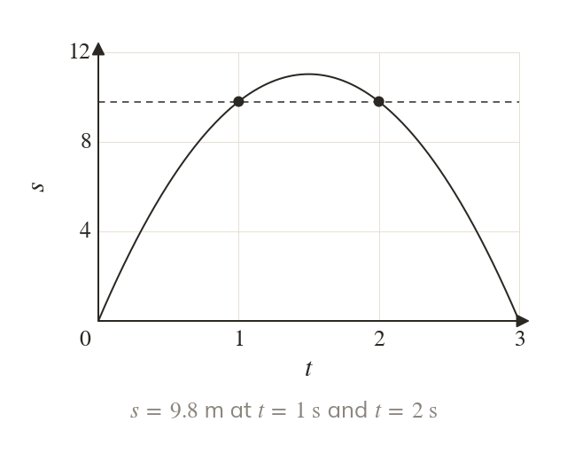

Gravity gives a constant acceleration
A body moving freely under gravity accelerates downwards at With upwards as positive, on the way up and on the way down.
A body thrown straight up is the first real use of the formulae with a known acceleration: with one direction chosen as positive. Chapter then asks what force causes that acceleration.
Work down the page at your own pace. Write every answer in your book first, then click to check it.
Read each card, then follow the worked examples one step at a time.

A body moving freely under gravity accelerates downwards at With upwards as positive, on the way up and on the way down.

At its highest point the body stops for an instant, so its velocity there is zero. Its acceleration is still
Pick an answer. If it's wrong, the feedback tells you which mistake it was.
Read each card, then follow the worked examples one step at a time.

Measure every displacement from the point of projection, with upwards positive. The sea m below a cliff top is at m.

Solving for a given height can give two positive times, one on the way up and one on the way down. A negative root is a time before the throw, so it is rejected.
Pick an answer. If it's wrong, the feedback tells you which mistake it was.
Finished? Next lesson: M10.1 Force Diagrams.
For each skill, tap the one that is true for you today. Your Revise pages start with anything you mark Not yet.
Your ratings are saved on this device only.
Log in, then search for a code to practise that skill.